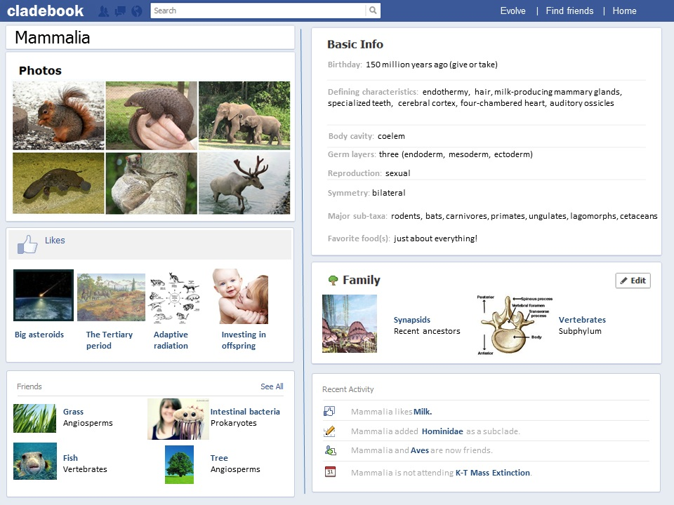

Phylum Assignment
(from Andrew Lyman-Butler: http://ismscience.org/index.php?option=com_content&view=article&id=2039:summer-assignment&catid=36:adv-bio&Itemid=57)
General Instructions:
You will be assigned a specific phylum or class of organisms. choose your favorite clade and make a Facebook page for it. You can get the template here. Make sure you don't do the same clade as another student.
Here is the list of phyla DKPCOFGS%20List.htm
Be prepared to share your Cladebook on the date assigned. You can put your Cladebook page in the class Google drive or email me the day before.
